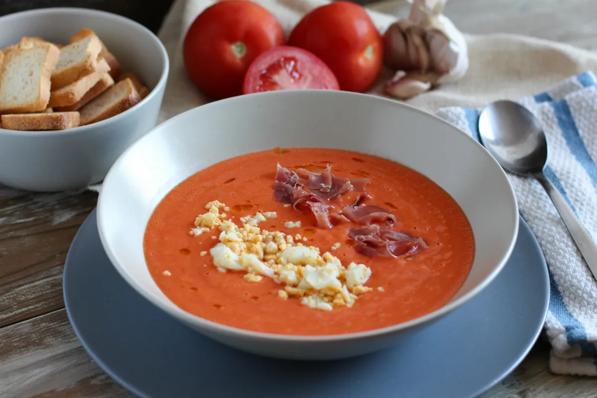

Salmorejo

A delicious garlic and tomato cold soup. Perfect for those hot summers in the south of Spain.
Ingredients
- Tomatoes:
Use in season, very ripe tomatoes. They are the major component of the dish, so they will have the biggest influence on the taste.
- Bread:
Traditionally, the leftover stale bread is used for this, but you can also dry white bread in the oven if you need to.
- Extra virgin olive oil:
There are times when the quality of the oil doesn't matter, this isn't one of those. Use good quality olive oil. It will give the salmorejo creamy and delicious.
- Garlic:
It's used raw, so one clove will be enough. If you like garlic, try two cloves (It will have some punch).
- Sherry Vinegar:
taste the soup and use the vinegar to adjust the acidity until you like it. You can use apple cider vinegar if you don't have sherry.
- Topings:
you can let your creativity guide you, but I always recommend the classics: Diced jamón serrano and hard boiled eggs.
Steps
- Core and coarsely chop 1 ½ pounds of ripe tomatoes. Add to a blender. Add 5 ounces of stale crustless bread, ⅓ cup of olive oil, and 1 crushed and the peeled garlic. Season with 1 tablespoon of sherry vinegar ¾ teaspoon of fine sea salt, and ¼ teaspoon of black pepper. Blend on high speed until very smooth.
- The soup should be thick and creamy (like a yogurt), if it's to thick add a little bit of cold water to thin it
- Cover and refrigerate the soup until chilled, at least 1 hour. Salmorejo is eaten cold, but this rest also gives time for the flavors to meld.
- Divide the soup among four bowls. Garnish with 2 chopped hard-boiled eggs and ¼ pound of sliced ham. Drizzle with some extra-virgin olive oil and finish with a grind of black pepper.
- Enjoy!